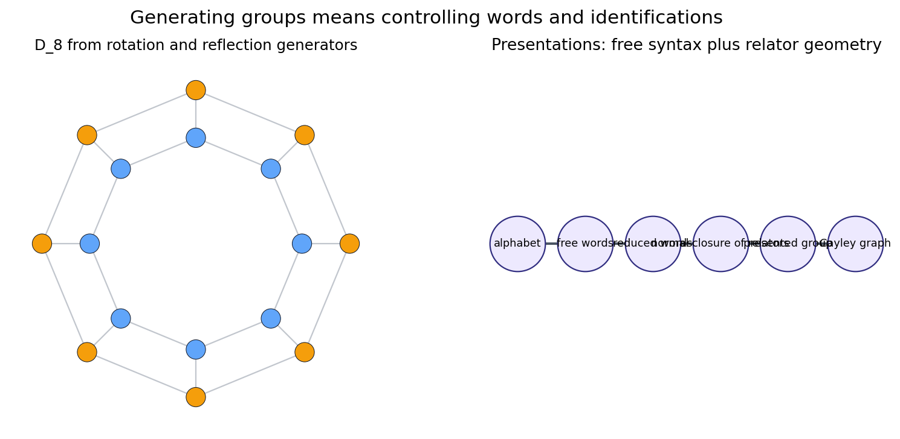
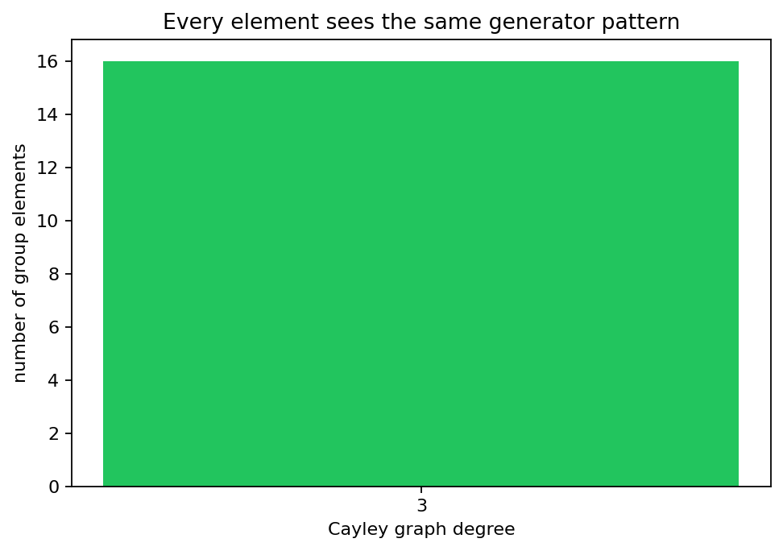

Groups, generators, relations, presentations, free products, extensions, and the first Cayley graph previews.
What algebraic data is needed before geometry can be attached to a group?
Groups, homomorphisms, kernels, images, quotients, and automorphism examples.
Generating sets, free groups, reduced words, normal closures, and presentations.
Products, extensions, free products, amalgamation, and HNN corridors.
A subset \(S\) generates \(G\) when every element of \(G\) is expressible as a finite word in letters from \(S\) and their inverses.
The free group on \(S\) keeps exactly the cancellations forced by \(s s^{-1}=e\) and no additional identifications.
Tree branches are words. Missing cycles mean no relator has yet closed a path.
Any function \(S \rightarrow G\) extends uniquely to a homomorphism \(F(S) \rightarrow G\).
A relator \(w\) forces \(w=e\), but the quotient also kills conjugates and products of relators.

For a fixed generating set, every vertex has the same menu of right-multiplication moves.

A finite alphabet reaches every group element.
A finite alphabet plus a finite list of relator rules describes the group.
Words alternate nontrivial syllables from the factors, with no cross-factor relation unless it is explicitly imposed.
Specified subgroups are identified first, so the resulting normal forms carry a controlled glue.
Replace the rotation order in the dihedral helper and predict the group order before rendering.
Separate rotation and reflection vertices, then locate which generator jumps between the two layers.
Save a check next to any new figure and assert the relators and graph regularity.
Generators create words. Relations create identifications. Presentations turn algebraic choices into Cayley graph geometry with checks.